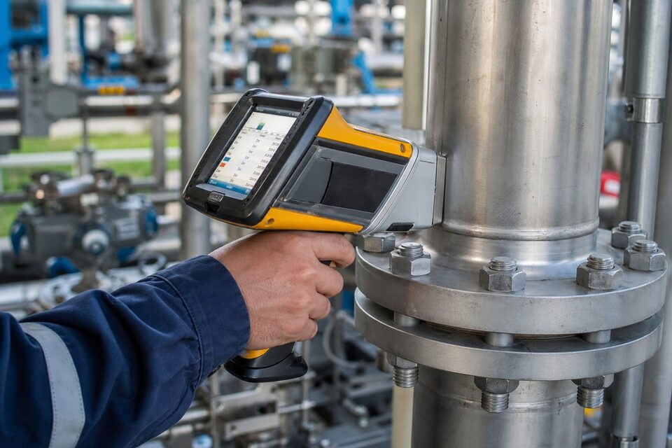

چرا (PMI) اهمیت دارد؟
اشتباه در متریال، یکی از پرهزینهترین خطاهای زنجیره تامین است: یک فلنج یا شیر با گرید اشتباه میتواند سالها کار کند و سپس در شرایط خوردگی یا دمای طراحی، به شکل غیرمنتظرهای شکست بخورد. چون تفکیک گریدهای آلیاژی با چشم غیرممکن است، تنها راه اطمینان، اندازهگیری ترکیب شیمیایی است. (PMI) همین اندازهگیری را به صورت مثبت و مستند انجام میدهد؛ یعنی به جای اعتماد به برگه و مارک، خود متریال محک زده میشود. در صنایع نفت و گاز، این تست به یکی از ارکان بازرسی ورودی تبدیل شده است.

آنالایزر (XRF) و روشهای دیگر
رایجترین ابزار (PMI)، آنالایزر فلورسانس اشعه ایکس قابل حمل است: دستگاه روی سطح قطعه قرار میگیرد و در چند ثانیه، ترکیب شیمیایی و گرید تخمینی را نشان میدهد. این روش برای تفکیک گریدهای استنلس، آلیاژهای نیکل و فولادهای کمآلیاژ عالی است اما در اندازهگیری عناصر سبک، به ویژه کربن، محدودیت دارد. برای تفکیک گریدهایی که تفاوت اصلی آنها در کربن است، روشهای مکمل مانند اسپکترومتری جرقهای استفاده میشود که نمونهبرداری سطحی بسیار کوچکی نیز دارد. انتخاب روش باید بر اساس سوال مهندسی انجام شود: تفکیک گرید یا اندازهگیری دقیق عناصر.
برنامه (PMI) در پروژه
اجرای موثر (PMI) نیازمند برنامه است، نه تست پراکنده. برنامه باید نقاط بازرسی (بازرسی ورودی، حین ساخت، پیش از راهاندازی)، درصد بازرسی برای هر دسته کالا و معیارهای پذیرش را مشخص کند. نتایج نیز باید با گواهی مواد و الزامات سفارش تطبیق و مستند شوند؛ گزارش (PMI) بدون مرجع مقایسه، ارزشی ندارد. در پروژههای بزرگ، اغلب نقاط حساس مانند متریالهای خاص و خطوط خورنده با درصد صد در صد و اقلام عمومی به صورت نمونهگیری بازرسی میشوند. کالیبراسیون دورهای آنالایزر نیز بخش جداییناپذیر برنامه است.
نکات عملی بازرسی
کیفیت نتیجه (PMI) به آمادهسازی سطح وابسته است: رنگ، زنگ و آلودگی باید از نقطه تست پاک شود تا طیف واقعی متریال خوانده گردد. محل تست نیز باید معرف باشد؛ برای قطعات ریختگی، چند نقطه و برای جوشها، نواحی مختلف اهمیت دارند. در قطعات کوچک، مهارت اپراتور در نگهداری و هدفگیری دستگاه بر تکرارپذیری نتایج اثر میگذارد. ثبت موقعیت مکانی هر تست روی نقشه یا لیست اقلام، ردیابی نتایج در بازرسیهای بعدی را ممکن میسازد.
انتخاب و نگهداری آنالایزر (XRF)
آنالایزرهای فلورسانس پرتو ایکس، رایجترین ابزار اجرای برنامه شناسایی مثبت متریالاند و انتخاب درست آنها، به اندازه خود برنامه بازرسی اهمیت دارد. در انتخاب، چند معیار اصلی وجود دارند: طیف عناصر قابل شناسایی که باید شامل عناصر کلیدی تفکیک گریدها مانند مولیبدن، کروم و نیکل باشد، سرعت آنالیز که در بازرسیهای تعداد بالا اهمیت پیدا میکند، مقاومت مکانیکی برای کار میدانی و سهولت کالیبراسیون. برای تفکیک گریدهای استنلس، دستگاهی که مولیبدن را با دقت کافی اندازه میگیرد ضروری است، چون تفاوت اصلی سیصدوچهار و سیصدوشانزده همین عنصر است. برای گریدهای کمآلیاژ و کربن استیل، فناوری پرتو ایکس محدودیت ذاتی در اندازهگیری کربن دارد و در این موارد باید از روشهای تکمیلی مانند آنالیز جرقهای استفاده کرد؛ این محدودیت را از مرحله انتخاب در نظر بگیرید تا انتظار نامتناسب از دستگاه نداشته باشید. در نگهداری، چند اقدام ساده عمر دستگاه و اعتبار نتایج را تضمین میکنند: کنترل روزانه با نمونه مرجع استاندارد قبل از شروع بازرسی، تمیز نگه داشتن پنجره آشکارساز که خراش یا آلودگی آن، قرائت را منحرف میکند، پایش وضعیت باتری و کالیبراسیون دورهای مطابق برنامه سازنده. سطح صلاحیت اپراتور هم اهمیت دارد؛ اپراتور باید بداند کجا تست کند، سطح را چگونه آماده کند و نتایج را چگونه تفسیر نماید، چون تست روی سطح رنگشده، زنگزده یا آلوده، نتیجه گمراهکننده میدهد. در مدیریت داده، ثبت نتایج همراه با موقعیت قطعه و تاریخ تست، امکان ردیابی و تحلیل روند را فراهم میکند؛ دستگاههای مدرن امکان خروجی گزارش و انتقال داده را دارند و بهتر است از ابتدا در جریان مستندسازی پروژه دیده شوند. در نهایت، آنالایزر ابزار است نه راهحل؛ اعتبار برنامه بازرسی به ترکیب دستگاه مناسب، اپراتور آموزشدیده و رویه مستند بستگی دارد و نبود هر یک از این سه، کل زنجیره را ضعیف میکند.
جمعبندی
(PMI) تضمین میکند متریال تحویلشده همان چیزی است که طراحی بر اساس آن انجام شده؛ حلقهای که اعتماد بین مدارک و واقعیت فیزیکی میسازد. با برنامه مشخص، درصد بازرسی متناسب ریسک و گزارشدهی مستند، میتوان از ورود متریال اشتباه به خطوط حساس جلوگیری کرد و ریسک شکستهای پرهزینه را به حداقل رساند.
سوالات رایج
(PMI) چیست؟
شناسایی مثبت متریال: تایید ترکیب شیمیایی آلیاژ یک قطعه با روشهای آنالیز، پیش از ورود به سرویس. هدف، اطمینان از این است که متریال تحویلشده دقیقاً همان چیزی است که سفارش داده شده.
آنالایزر (XRF) چگونه کار میکند؟
با تابش اشعه ایکس به سطح قطعه، اتمهای ماده فلورسانس مشخصی ساطع میکنند که طیف آنها ترکیب شیمیایی را نشان میدهد؛ روش سریع و غیرمخرب که برای تفکیک گریدهای آلیاژی رایج عالی است.
کجاها (PMI) الزامی است؟
در خطوط با سیالهای خورنده یا دمای بالا، نقاط حساس ایمنی و هر جا که اشتباه متریال پیامد جدی دارد؛ بسیاری مشخصههای پروژهای، درصدی از بازرسی یا بازرسی کامل را الزام میکنند.
محدودیت (XRF) چیست؟
عناصر سبک مانند کربن را به خوبی اندازهگیری نمیکند؛ بنابراین برای تفکیک گریدهایی که تفاوت اصلی آنها کربن است، به روشهای تکمیلی مانند اسپکترومتری جرقهای نیاز است.
مطالب مرتبط
هماهنگی بازرسی و آزمون (PMI) برای اقلام تامینشده، مطابق الزامات پروژه انجام میشود.
مشاهده صفحه محصول ← ثبت RFQ همین محصولتامین این تجهیزات را به پیشرو تجهیز فرتاک بسپارید
شرکت پیشرو تجهیز فرتاک تامینکننده تخصصی تجهیزات صنعتی برای پروژههای نفت، گاز، پتروشیمی، فولاد و نیروگاهی است. برای دریافت پیشنهاد فنی و قیمت، استعلام (RFQ) خود را ثبت کنید تا کارشناسان مهندسی فروش در کوتاهترین زمان پاسخ دهند.
- تضمین کیفیتنظام کنترل مدارک و بازرسی
- تامین تجهیزات صنایع نفت و گازپکیج مواد مطابق وندورلیست